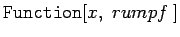
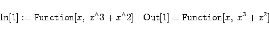
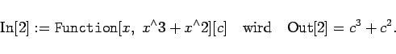
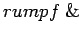
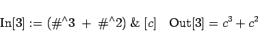
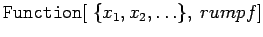
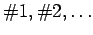

Mathematica bietet die Möglichkeit, sogenannte reine Funktionen zu nutzen. Das sind Funktionen ohne spezielle Namen. Man bezeichnet sie mit . Mit rumpf wird der Ausdruck für die Funktion in der Variablen x bezeichnet.
|  | (20.15) |
und mit
|  | (20.16) |
Man kann für reine Funktionen eine vereinfachte Schreibweise nutzen. Sie lautet , wobei die zu benutzende Variable mit # gekennzeichnet wird. Anstelle der vorhergehenden zwei Zeilen kann man also schreiben
|  | (20.17) |
Es lassen sich auch reine Funktionen mehrerer Veränderlicher definieren:
 oder in Kurzform , wobei die Variablen in rumpf durch die Elemente  bezeichnet werden. Die Benutzung des Zeichens zum Abschluß ist sehr wichtig, da hieran erkannt wird, daß der vorstehende Ausdruck als reine Funktion zu betrachten ist.